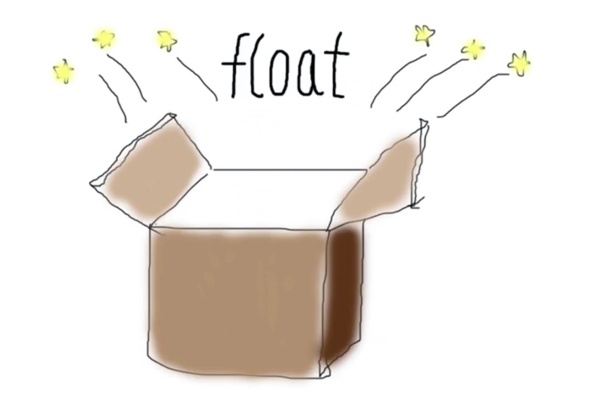
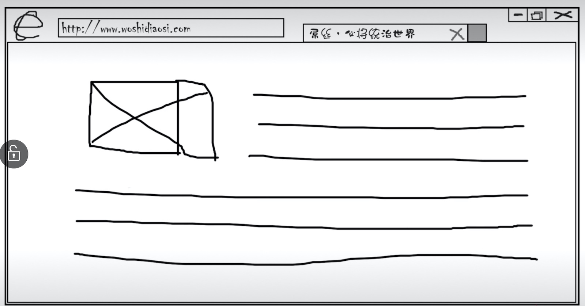
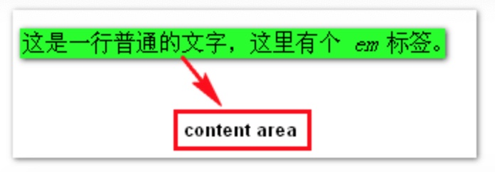
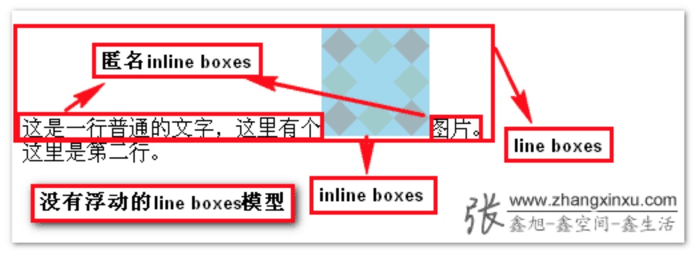
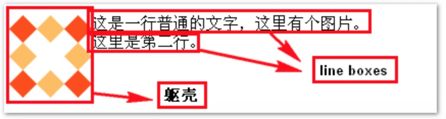
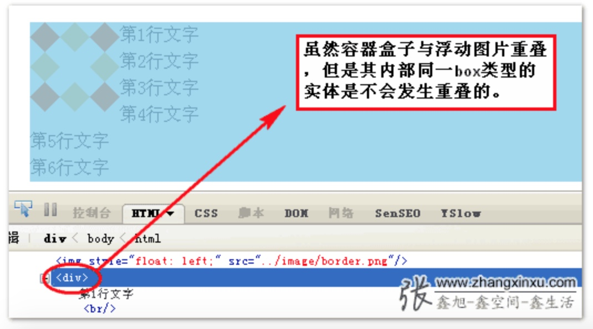
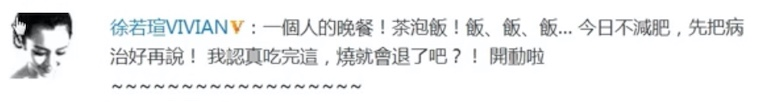
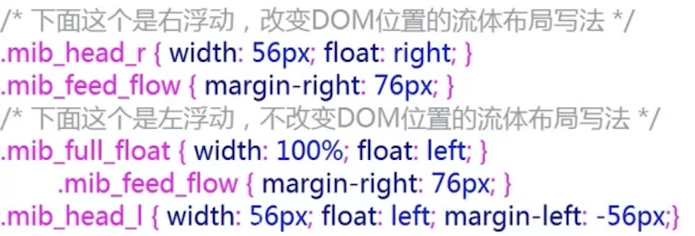

一、float的历史
知道其历史能更容易理解事物本质。
我们可以发现，目前流行采用浮动方法实现的无论是分栏布局，还是列表排列我们都可以用其他一些CSS属性（不考虑table）代替实现，唯一一个实现不了的就是“文字环绕图片”。这个替代不了的作用才是float真正的意义所在。
其实，浮动设计的初衷：仅仅用来实现文字环绕效果。而不是用来做布局的！不过，其因兼容性还算良好，与堆积木这种现实认知匹配，上手简单，因此在旧时代被大肆使用，也就是常说的“浮动布局”，也算阴差阳错开创了自己的一套布局。

明白了浮动设计的初衷，就能明白很多浮动特有的表现了。
二、浮动的特性 ———— 包裹与破坏
1.包裹（对自身）
包裹的表现：
- 收缩：水平方向收缩为内容宽度（破坏block水平元素的流体特性）
- 坚挺：本身会撑起来。（比如计算高度时会包括内部float元素、防止margin穿透…）
- 隔绝：完全封闭
（2、3是BFC特性）
【补充】具有包裹性的小伙伴：
float: left/right
display: inline-block/table-cell/…
position: absolute(近亲)/fixed/sticky
overflow: hidden/auto/scroll
“说句您应该没有见过的结论：撇开浮动的“破坏性”，浮动就是个带有方位的display:inline-block属性。（可以联想一下多个设置float:left；的div从左到右水平排列。不会重叠的原因是BFC特性。）
display:inline-block某种意义上的作用就是包裹(wrap)，而浮动也有类似的效果。
所以类似于display:block; float:left;的CSS代码超过95%的情况是没有道理的(display:block是多余的)。
然而，float无法等同于display:inline-block，其中原因之一就是浮动的方向性，display:inline-block仅仅一个水平排列方向，就是从左往右，而float可以从右往左排列，这就是两者的差异。”
2.破坏 （对父容器）
使父元素高度塌陷。
先说结论：文字之所以会环绕含有float属性的图片是因为浮动破坏了正常的line boxes。
【补充】具有破坏性的小伙伴：
float: left/right
display: none
position: absolute(近亲)/fixed/sticky
💡下面具体说说浮动的破坏性的原理
这里有必要先讲讲line boxes模型。先看一段HTML代码：<p>这是一行普通的文字，这里有个<em>em</em>标签。</p>
这一段代码涉及到了四种boxes：
- 首先是
标签所在的containing box，此box包含了其他的boxes；
- 然后就是inline boxes，如下图：
inline boxes不会让内容成块显示，而是排成一行，如果内容被inline属性标签（,,…）包裹,则形成inline boxes，如果是个光秃秃的文字而没有任何inline属性标签包裹，则形成匿名inline boxes。 - line box

在containing boxes中，一个一个的inline boxes组成了line boxes。这是浮动影响布局的关键box类型。 - content area，

这是一种围绕文字看不见的box，其大小与font-size大小相关。
默认情况下，图片与文字混排应该如下图所示：图片和文字基线对齐，图片与文字在同一行上。

上图中，图片是一个inline boxes，两边的文字也是inline boxes。由于line boxes的高度是由其内部最高的inline boxes的高度决定的，所以这里的line boxes的高度就是图片的高度。此时图片与文字是都是inline boxes，显示的时候是基线对齐的，所以一张图片只能与一行文字对齐。
但是若想要一张图片与多行文字对齐，该怎么办呢？
答：破坏正常的line boxes模型，让图片脱离出来，而不与文字进行基线对齐。
给图片添加float:left样式后的表现：

刚才说过，在正常情况下，图片自身就是个inline boxes，与两侧的文字inline boxes共同组成了line boxes，但是，图片加入浮动后，情况就完全变了。浮动会彻底破坏img图片的inline boxes特性，图片不再是一个inline boxes。一旦图片失去了inline boxes特性就无法与inline boxes的文字进行基线对齐从而排成一行，并且从line boxes上脱离出来，在浮动方位的作用下，靠边排列。而其他inline boxes重新组合，环绕浮动元素排列。
这里要注意，虽然浮动元素的inline-boxes被破坏了，但是其仍然是一个content area，所以与同样是content area实体的文字不会发生重叠。
浮动元素与绝对定位元素的区别：
与浮动元素一样，绝对定位元素也具有“包裹性”，那么他们俩的差别在哪里呢？
绝对定位的元素脱离了文档流，而浮动元素依旧在文档流中。这就会导致显示上的差异：同处于文档流中的文字实体不会与浮动元素重叠，而会与绝对定位元素重叠。这就是文字环绕显示的重要原因之一：虽然图片实际占据的高度为0，但是由于其宽度实体存在（包裹性）
，同样是content area实体的文字不会与之重叠。

3.所以float的特性是好的吗
浮动使父元素高度塌陷，不是bug，是标准。
浮动的原本作用仅仅是为了实现文字环绕效果而已，特性使然。其破坏性是情非得已！
三、浮动与兼容性
让IE7飙泪的浮动问题：
1.含clear的浮动元素包裹不正确的问题
2.浮动元素倒数2个莫名垂直间距问题
3.浮动元素最后一个字符重复问题
4.浮动元素楼梯排列问题
5.浮动元素和文本不在同一行的问题
而在IE8+都不会出现这些问题
解决：合理使用浮动
不使用浮动做砌砖布局
四、降低浮动破坏性造成的影响 ———— 清除浮动
清除浮动是一种简称，实际上是清除浮动带来的影响，即破坏性（包裹性是其自身特性，不算是对其他元素的影响）。
所以，清除浮动其实就一个目的————解决高度塌陷的问题。
这里不得不重提一下为什么会产生高度塌陷。前文提到了浮动会破坏元素中内容的inline boxes，这时候若元素内没有其他实际内容时，就会发生高度塌陷。所以其实并不是只要有浮动就会有高度塌陷，并不是只要有浮动就一定要清除浮动的。
那么如何清除浮动呢？
IE下清除浮动很简单，使元素haslayout就可以了。如宽度值、高度值、绝对定位、zoom，浮动本身都可以让元素haslayout。显然，在IE下首选zoom:1;，不会干扰任何样式。
非IE浏览器常用overflow属性，overflow:hidden或者overflow:scroll都可以，但是scroll经常会一不小心出现滚动条，所以使用hidden更多一些。由于现代浏览器都支持after伪类元素，所以常常也会用after写入一个clear属性的元素清除浮动。当然，最投机取巧的方法就是在最后直接插入一个<div style="clear:both;"></div>当做最后一个子元素放到父元素那里。
清除浮动有三大基本方法：
方法一：投机取巧法
在最后直接插入一个<div style="clear:both;"></div>当做最后一个子元素放到父元素那里。
优点：兼容性强，使用方便，屡试不爽。
缺点：失去语义化，浪费一个标签，并且只能使用一次，不能通用，且有时一不留神中间多写了一个空格会产生一段空白高度。
不推荐。
方法二：父元素触发BFC overflow + zoom1
.clearfix {overflow:hidden; *zoom:1;}
优点：代码简洁，兼容性强，含盖所有浏览器。
缺点：必须要确保不会发生溢出剪裁现象，只能局部使用，不能通用。
一般不用这个方法，只是有时候顺便去除浮动时会用到。
注：触发BFC有很多方式：
父元素BFC（IE8+） 或 haslayout（IE6/7）
- float: left/right
- position: absolute/fixed
- overflow: hidden/scroll(IE7+)
- display: inline-block/table-cell(IE8+)
- width/height/zoom:1/…(IE6/7)
…
每种方式的优缺点具体参考《流体布局与BFC生成的多栏布局》。
方法三：
所谓after，就是指在标签的最后一个子元素的后面。可以用css生成一个具有clear属性的元素，其中最关键的样式就是content。在网上搜到的最多的内容就是“.”一个点，但实际上无论你写什么内容都没问题。.fix {*zoom: 1}
.fix:after {display: block; content: 'clear'; clear: both; line-height: 0; visibility: hidden;}
这里的line-height:0写成height:0也是可以的。
此方法综合起来最好，且不会影响其他任何样式，通用性强，覆盖面广。
✅推荐！
权衡后的策略
1 | /* IE8以上浏览器使用伪元素 */ |
注意
不要滥用.clearfix，应只用于那些包含浮动子元素的父级元素上。
乱入的haslayout往往会让IE6/7做出出格的事情！
浮动也会触发haslayout，再加上浮动具有破坏性，所以浮动在IE6/7下更有魔性！
所以要慎重使用浮动。
五、浮动的正确使用 ———— 浮动与流体布局
看家本领————文字环绕效果
文字环绕衍生 ———— 单侧固定
2.1 左浮动

float + margin-left + padding-right（头像）/left（内容）
float + BFC + padding-right（头像）/left（内容）2.2 右浮动
若对头像使用float:right，会导致DOM顺序与渲染后所见的不同。1
2
3.mib_full_float {width: 100%; float: left;}
.mib_feed_flow {margin-right: 76px}
.mib_head_img {width: 56px; float: left; margin-left: -56px}
2.3 自适应两栏布局的最佳实践
六、float与JavaScript
float是js中的一个关键字，所以在js中调用时，不能使用obj.style.float="left"。要使用其他方法。
IE浏览器：obj.style.styleFloat="left";
其他浏览器：obj.style.cssFloat="left";